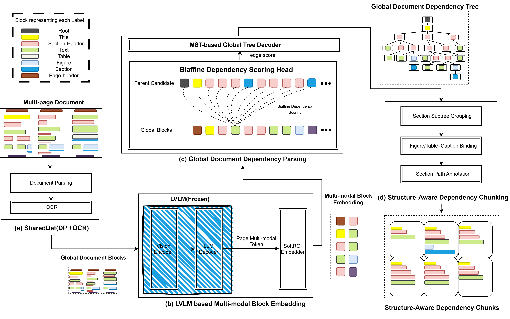

M3DocDep: Multi-modal, Multi-page, Multi-document Dependency Chunking with Large Vision-Language Models
Top Conferences
Authors
Joongmin Shin*, Jeongbae Park, Jaehyung Seo, Heuiseok Lim
Abstract
This work uses large vision-language models to infer cross-page and cross-document dependency structures in complex unstructured inputs. The resulting structure-aware multimodal chunks improve evidence retrieval quality and downstream QA performance for retrieval-augmented pipelines.
Key Contribution
LVLM-based dependency chunking that reconstructs cross-page structure for long-document retrieval and QA.
Architecture
